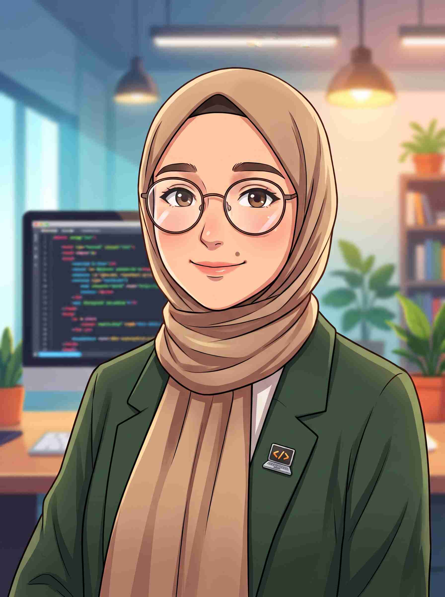

When I was in primary school, my family brought home our first huge tube computer, and that's when my era of technology began. Since then, I have been curious about every aspect of these intriguing devices. Technology, innovations, and smart devices are fascinating realms for me. Currently, I am an enthusiastic, curious, excited, and perfectionist Computer Engineering student. During high school, I attended DENEYAP workshops. I have a basic knowledge of Java, C, and C# programming languages. I am also trying my hand at game development with Unity. Additionally, I am learning robotic coding. I am taking trainings on cyber security together with "Siber Vatan" and I am thinking of moving forward in this field